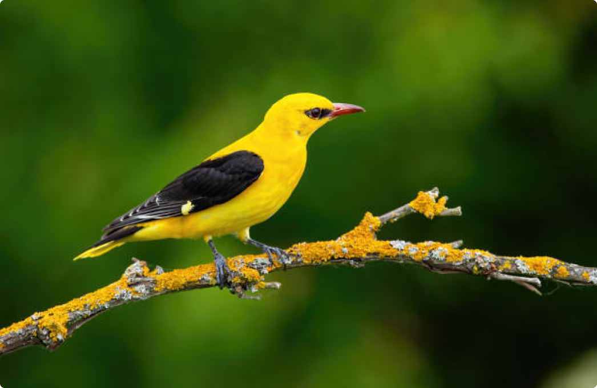

Le Loriot d'Europe bénéficie d'une protection totale sur le territoire français depuis l'arrêté ministériel du 17 avril 1981.
Description
De la taille d'un merle, le mâle arbore une livrée jaune d'or avec les ailes, le dos et la queue noirs. Un trait noir joint l'œil aux commissures.
Habitat
Les milieux recherchés par l'espèce sont des boisements feuillus, même peu étendus, pour peu que les arbres y atteignent une hauteur suffisante, et qu'il s'y trouve quelques parties de sous-bois un peu dense.
On rencontre le loriot dans les peupleraies, les parcs, les vergers.
Le Loriot d’Europe ou Loriot jaune est le seul représentant de sa famille en Europe, où sa présence est signalée presque partout à l’exception de la Scandinavie et des Pays baltes. Il est rare dans les Iles britanniques. On ne le rencontre cependant que dans les régions de plaine ou de moyenne altitude.

Description
Les milieux recherchés par l'espèce sont des boisements feuillus, même peu étendus, pour peu que les arbres y atteignent une hauteur suffisante, et qu'il s'y trouve quelques parties de sous-bois un peu dense.